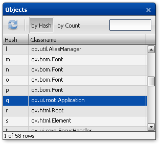
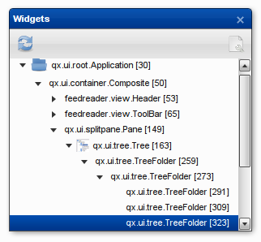
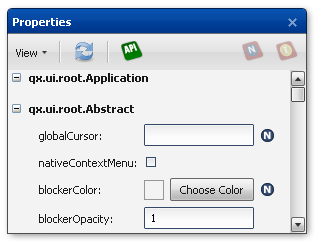
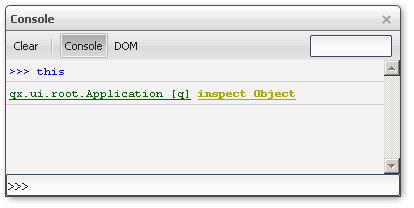
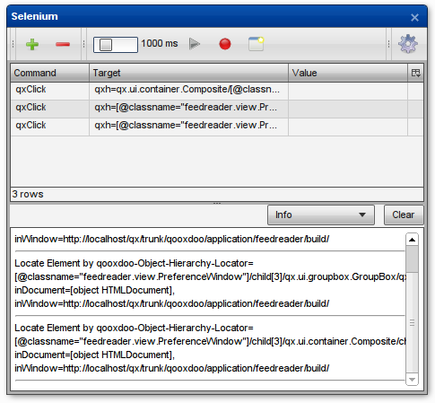

Inspector¶
qooxdoo Inspector is a powerful development tool perfectly suited for live debugging and modifying qooxdoo applications.
See it in action, debugging the qooxdoo feedreader demo application.
If you know the Firebug extension for Firefox, you will be familiar with most of Inspector's capabilities. But it is much more than that: Since it is a qooxdoo application itself, it runs in all major browsers, including IE, Firefox, Opera, Safari and Chrome. And it allows for truly qooxdoo-specific debugging, including displaying the UI hierarchy and modifying the properties of qooxdoo widgets.
Usage¶
There are two ways to use the inspector (explained in more detail below):
- The first way is to run a simple generator job to create a local inspector instance for your custom application. (See: Running the inspector job)
- Generate the build version of the inspector and open it in a (local) web server. (See: Running inspector with an HTTP server)
Individual inspector from file system¶
First of all, make sure you've created a source version of your application. Then create the inspector:
generate.py inspector
Once the job is finished, you can open the index.html file from the created inspector application. You will find the file in the newly generated inspector folder (inspector\index.html).
Objects Window¶

The objects window lists all qooxdoo objects created by your app in a table. The inspector has full access to the internal object registry of your application. Of course, the inspector's objects are excluded from the display so they won't interfere with debugging your app. The objects can be sorted by hash, count or name and filtered by name. To select an object listed in the table and to update the other views accordingly, simply click on its list entry.
Widgets Window¶

The widgets window displays the hierarchical structure of your application's GUI as a tree. Each widget which was added to the document (or into any deeper widget hierarchy) will be shown. Again, a simple click on a widget in the tree selects it. Most of the widgets have a specific icon (corresponding to their type) in order to identify the widgets in the tree faster. The name of the widget's class and its hash value are shown as identifiers in the tree.
The widgets window has two display modes: By default, the application's "public" widget hierarchy is displayed, i.e. only those widgets that were explicitly added by the application developer using the parent widget's "add" method. Sub-widgets that are added by the parent widget itself ("child controls") are hidden in this mode. That's why it's possible to select a widget using the "Inspect widget" button or the Objects window without the Widgets tree displaying it. In that case, use the button in the top right corner to switch to the internal widget hierarchy display mode and click the "reload" button. After that, all sub-widgets including child controls will be displayed in the window.
Properties Window¶

The properties window is one of two windows whose main focus is on actually working with a previously selected object. It shows all properties of the currently selected object. There are two different ways to sort the properties.
But it is not only about displaying properties, it also allows editing: To make this as convenient and least error-prone as possible, form elements are chosen according to the property's type. For instance, in many cases it is as easy as using a checkbox (for a boolean value), a drop-down menu (for pre-defined values) or a color picker (for a color value). For properties that support a wider range of values, regular text input fields are used.
If you want to know more about a certain property, select it and click the API button to open up the API documentation for the selected property.
Console¶

The console is probably the most powerful Inspector window, as it allows viewing and modifying instances similar to the properties window, but it also gives the developer a virtually unrestricted environment for debugging a qooxdoo app.
One part of the console is a generic JavaScript console, familiar to most Firebug users. At the prompt you can enter arbitrary JavaScript code which is executed after pressing enter. The keyword "this" refers to the currently selected object. That way it is very easy to inspect and modify the currently selected widget instance. To make it even more convenient, auto-completion while entering code is available. This allows you to select one of the suggested methods that are available for a specific object. Hit the CRTL+Space keys to display a list of available instance members.
Another part of the console window is a DOM browser, named as in Firebug. This browser allows you to inspect an object interactively. You can "dive into" an object, down to arbitrary depth, following property values that refer to data structures within the current object or pointing to ones within other objects.
Selenium Window¶

The Selenium window's purpose is to help test developers in writing simulated interaction tests which will then be run using the Selenium testing framework and qooxdoo's Simulator component or the Simulator contribution it is based on. Similar to the Selenium IDE Firefox plugin, it can be used to determine a locator string for any element (qooxdoo widget in this case) and supports playback of test commands against the inspected application.
There is a dedicated page with extensive descriptions that demonstrates how to create a test case using the Selenium window: